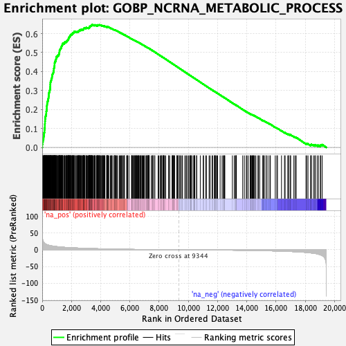
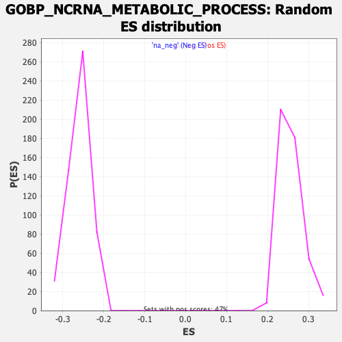

| | | Dataset | DE_genes |
| Phenotype | NoPhenotypeAvailable |
| Upregulated in class | na_pos |
| GeneSet | GOBP_NCRNA_METABOLIC_PROCESS |
| Enrichment Score (ES) | 0.6461522 |
| Normalized Enrichment Score (NES) | 2.5188274 |
| Nominal p-value | 0.0 |
| FDR q-value | 0.0 |
| FWER p-Value | 0.0 |
Table: GSEA Results Summary

Fig 1: Enrichment plot: GOBP_NCRNA_METABOLIC_PROCESS
Profile of the Running ES Score & Positions of GeneSet Members on the Rank Ordered List
| SYMBOL | RANK IN GENE LIST | RANK METRIC SCORE | RUNNING ES | CORE ENRICHMENT | | 1 | RRP9 | 7 | 46.789 | 0.0160 | Yes |
| 2 | RPL7L1 | 23 | 34.870 | 0.0274 | Yes |
| 3 | DUS3L | 47 | 27.892 | 0.0360 | Yes |
| 4 | QRSL1 | 71 | 24.831 | 0.0435 | Yes |
| 5 | TRNT1 | 91 | 23.042 | 0.0506 | Yes |
| 6 | SHQ1 | 100 | 22.693 | 0.0581 | Yes |
| 7 | URM1 | 117 | 21.608 | 0.0648 | Yes |
| 8 | SNAPC4 | 121 | 21.417 | 0.0722 | Yes |
| 9 | EXOSC2 | 130 | 20.877 | 0.0790 | Yes |
| 10 | NOL6 | 159 | 19.918 | 0.0845 | Yes |
| 11 | RPF2 | 160 | 19.895 | 0.0915 | Yes |
| 12 | PUS1 | 165 | 19.692 | 0.0982 | Yes |
| 13 | DIMT1 | 171 | 19.460 | 0.1048 | Yes |
| 14 | ADAT2 | 180 | 19.222 | 0.1111 | Yes |
| 15 | IMP4 | 181 | 19.175 | 0.1178 | Yes |
| 16 | NCL | 184 | 19.143 | 0.1244 | Yes |
| 17 | RPP40 | 190 | 18.801 | 0.1307 | Yes |
| 18 | PPAN | 192 | 18.733 | 0.1372 | Yes |
| 19 | MRM3 | 199 | 18.519 | 0.1434 | Yes |
| 20 | TRMT11 | 201 | 18.440 | 0.1498 | Yes |
| 21 | EXOSC7 | 212 | 18.010 | 0.1556 | Yes |
| 22 | PLD6 | 222 | 17.679 | 0.1613 | Yes |
| 23 | EXOSC3 | 236 | 17.219 | 0.1666 | Yes |
| 24 | REXO4 | 261 | 16.765 | 0.1712 | Yes |
| 25 | C9orf64 | 269 | 16.635 | 0.1767 | Yes |
| 26 | MARS2 | 278 | 16.357 | 0.1820 | Yes |
| 27 | GTF3C4 | 279 | 16.317 | 0.1877 | Yes |
| 28 | CDK5RAP1 | 287 | 16.165 | 0.1930 | Yes |
| 29 | NIFK | 306 | 15.787 | 0.1976 | Yes |
| 30 | GTF3C5 | 311 | 15.671 | 0.2029 | Yes |
| 31 | RIOK1 | 314 | 15.632 | 0.2082 | Yes |
| 32 | MRPL44 | 315 | 15.626 | 0.2137 | Yes |
| 33 | POLR1E | 318 | 15.567 | 0.2191 | Yes |
| 34 | RARS2 | 331 | 15.294 | 0.2238 | Yes |
| 35 | MAK16 | 335 | 15.181 | 0.2289 | Yes |
| 36 | DDX18 | 342 | 15.066 | 0.2339 | Yes |
| 37 | MTO1 | 347 | 15.028 | 0.2390 | Yes |
| 38 | TP53 | 363 | 14.770 | 0.2433 | Yes |
| 39 | NOL8 | 394 | 14.312 | 0.2468 | Yes |
| 40 | PARS2 | 405 | 14.204 | 0.2512 | Yes |
| 41 | DROSHA | 406 | 14.193 | 0.2562 | Yes |
| 42 | LRRC47 | 426 | 13.839 | 0.2600 | Yes |
| 43 | TCOF1 | 433 | 13.779 | 0.2646 | Yes |
| 44 | TFB1M | 437 | 13.751 | 0.2692 | Yes |
| 45 | NSUN2 | 449 | 13.554 | 0.2734 | Yes |
| 46 | RRP36 | 454 | 13.515 | 0.2779 | Yes |
| 47 | PRKRA | 460 | 13.401 | 0.2823 | Yes |
| 48 | LYAR | 465 | 13.327 | 0.2868 | Yes |
| 49 | TRMT61A | 472 | 13.210 | 0.2911 | Yes |
| 50 | NOP56 | 498 | 12.991 | 0.2943 | Yes |
| 51 | DDX27 | 513 | 12.904 | 0.2981 | Yes |
| 52 | VARS1 | 516 | 12.888 | 0.3025 | Yes |
| 53 | BYSL | 531 | 12.690 | 0.3062 | Yes |
| 54 | BRIX1 | 540 | 12.602 | 0.3102 | Yes |
| 55 | DUS1L | 545 | 12.563 | 0.3144 | Yes |
| 56 | WDR46 | 546 | 12.560 | 0.3188 | Yes |
| 57 | LARS2 | 552 | 12.506 | 0.3229 | Yes |
| 58 | FARSB | 554 | 12.481 | 0.3272 | Yes |
| 59 | DDX54 | 555 | 12.464 | 0.3316 | Yes |
| 60 | DDX56 | 561 | 12.418 | 0.3357 | Yes |
| 61 | TDRD5 | 563 | 12.416 | 0.3400 | Yes |
| 62 | TYW1 | 567 | 12.404 | 0.3442 | Yes |
| 63 | METTL6 | 584 | 12.246 | 0.3476 | Yes |
| 64 | IPPK | 592 | 12.166 | 0.3515 | Yes |
| 65 | PWP2 | 618 | 11.950 | 0.3544 | Yes |
| 66 | RRP1B | 621 | 11.926 | 0.3585 | Yes |
| 67 | TRMO | 628 | 11.870 | 0.3623 | Yes |
| 68 | TARS1 | 658 | 11.627 | 0.3648 | Yes |
| 69 | UTP6 | 666 | 11.568 | 0.3685 | Yes |
| 70 | XPO5 | 668 | 11.559 | 0.3725 | Yes |
| 71 | RRP1 | 675 | 11.459 | 0.3762 | Yes |
| 72 | WDR12 | 679 | 11.431 | 0.3801 | Yes |
| 73 | DHX37 | 700 | 11.326 | 0.3830 | Yes |
| 74 | EXOSC10 | 704 | 11.297 | 0.3868 | Yes |
| 75 | YTHDF2 | 727 | 11.076 | 0.3895 | Yes |
| 76 | TSEN54 | 746 | 10.949 | 0.3924 | Yes |
| 77 | SSB | 763 | 10.833 | 0.3953 | Yes |
| 78 | RPUSD3 | 769 | 10.808 | 0.3988 | Yes |
| 79 | ELP1 | 771 | 10.806 | 0.4026 | Yes |
| 80 | SRFBP1 | 790 | 10.675 | 0.4054 | Yes |
| 81 | UTP4 | 797 | 10.650 | 0.4088 | Yes |
| 82 | POLR1B | 798 | 10.638 | 0.4125 | Yes |
| 83 | MDN1 | 799 | 10.637 | 0.4162 | Yes |
| 84 | GTF3C6 | 811 | 10.575 | 0.4194 | Yes |
| 85 | RPP21 | 827 | 10.495 | 0.4222 | Yes |
| 86 | NOL9 | 835 | 10.440 | 0.4255 | Yes |
| 87 | QTRT2 | 841 | 10.384 | 0.4289 | Yes |
| 88 | NOC4L | 843 | 10.369 | 0.4325 | Yes |
| 89 | MRTO4 | 846 | 10.352 | 0.4360 | Yes |
| 90 | DDX49 | 848 | 10.341 | 0.4396 | Yes |
| 91 | ELAC2 | 849 | 10.332 | 0.4432 | Yes |
| 92 | DKC1 | 855 | 10.296 | 0.4465 | Yes |
| 93 | ESF1 | 871 | 10.202 | 0.4493 | Yes |
| 94 | RPF1 | 877 | 10.169 | 0.4526 | Yes |
| 95 | FARSA | 889 | 10.046 | 0.4556 | Yes |
| 96 | MRM2 | 931 | 9.818 | 0.4568 | Yes |
| 97 | UTP15 | 932 | 9.817 | 0.4603 | Yes |
| 98 | WDR3 | 933 | 9.816 | 0.4637 | Yes |
| 99 | RPP14 | 949 | 9.762 | 0.4663 | Yes |
| 100 | SBDS | 956 | 9.728 | 0.4694 | Yes |
| 101 | RPL35 | 963 | 9.703 | 0.4725 | Yes |
| 102 | TSR1 | 970 | 9.678 | 0.4756 | Yes |
| 103 | RRS1 | 972 | 9.656 | 0.4789 | Yes |
| 104 | METTL8 | 1010 | 9.444 | 0.4803 | Yes |
| 105 | EXOSC8 | 1054 | 9.198 | 0.4812 | Yes |
| 106 | WDR18 | 1060 | 9.158 | 0.4842 | Yes |
| 107 | GATC | 1081 | 9.026 | 0.4863 | Yes |
| 108 | KRI1 | 1130 | 8.818 | 0.4868 | Yes |
| 109 | NOP58 | 1131 | 8.813 | 0.4899 | Yes |
| 110 | NGDN | 1151 | 8.730 | 0.4920 | Yes |
| 111 | DDX52 | 1152 | 8.729 | 0.4950 | Yes |
| 112 | POP7 | 1158 | 8.710 | 0.4978 | Yes |
| 113 | NOP2 | 1176 | 8.633 | 0.4999 | Yes |
| 114 | DCAF13 | 1179 | 8.615 | 0.5029 | Yes |
| 115 | UTP20 | 1183 | 8.596 | 0.5057 | Yes |
| 116 | GEMIN4 | 1185 | 8.588 | 0.5087 | Yes |
| 117 | PUS7 | 1188 | 8.567 | 0.5116 | Yes |
| 118 | CARS2 | 1212 | 8.468 | 0.5133 | Yes |
| 119 | WDR75 | 1217 | 8.440 | 0.5161 | Yes |
| 120 | PTCD1 | 1231 | 8.370 | 0.5183 | Yes |
| 121 | RRP7A | 1254 | 8.282 | 0.5200 | Yes |
| 122 | QTRT1 | 1277 | 8.198 | 0.5218 | Yes |
| 123 | TOE1 | 1289 | 8.151 | 0.5240 | Yes |
| 124 | TFB2M | 1301 | 8.101 | 0.5263 | Yes |
| 125 | TSEN2 | 1308 | 8.066 | 0.5288 | Yes |
| 126 | NOL11 | 1315 | 8.057 | 0.5313 | Yes |
| 127 | GTF3A | 1329 | 8.017 | 0.5334 | Yes |
| 128 | RPP25L | 1334 | 8.002 | 0.5360 | Yes |
| 129 | HARS2 | 1353 | 7.938 | 0.5378 | Yes |
| 130 | PUSL1 | 1375 | 7.867 | 0.5395 | Yes |
| 131 | AARS2 | 1389 | 7.812 | 0.5415 | Yes |
| 132 | SPIN1 | 1399 | 7.775 | 0.5438 | Yes |
| 133 | METTL1 | 1400 | 7.775 | 0.5465 | Yes |
| 134 | MTERF4 | 1407 | 7.761 | 0.5489 | Yes |
| 135 | MRM1 | 1466 | 7.568 | 0.5485 | Yes |
| 136 | SUV39H1 | 1516 | 7.402 | 0.5485 | Yes |
| 137 | XRN2 | 1519 | 7.394 | 0.5510 | Yes |
| 138 | THUMPD3 | 1527 | 7.358 | 0.5532 | Yes |
| 139 | ERI1 | 1537 | 7.327 | 0.5553 | Yes |
| 140 | NVL | 1599 | 7.117 | 0.5546 | Yes |
| 141 | HARS1 | 1625 | 7.059 | 0.5557 | Yes |
| 142 | TP53RK | 1653 | 6.968 | 0.5567 | Yes |
| 143 | METTL2B | 1672 | 6.906 | 0.5582 | Yes |
| 144 | POLR1G | 1689 | 6.865 | 0.5598 | Yes |
| 145 | HEATR1 | 1696 | 6.859 | 0.5618 | Yes |
| 146 | PDCD11 | 1706 | 6.837 | 0.5638 | Yes |
| 147 | UTP11 | 1743 | 6.718 | 0.5642 | Yes |
| 148 | RRP15 | 1760 | 6.665 | 0.5657 | Yes |
| 149 | LAGE3 | 1780 | 6.615 | 0.5670 | Yes |
| 150 | EBNA1BP2 | 1787 | 6.597 | 0.5690 | Yes |
| 151 | IARS2 | 1795 | 6.583 | 0.5710 | Yes |
| 152 | WARS2 | 1797 | 6.577 | 0.5732 | Yes |
| 153 | NAT10 | 1816 | 6.533 | 0.5745 | Yes |
| 154 | PES1 | 1817 | 6.529 | 0.5768 | Yes |
| 155 | ZBTB8OS | 1821 | 6.516 | 0.5790 | Yes |
| 156 | METTL2A | 1837 | 6.472 | 0.5804 | Yes |
| 157 | FARS2 | 1852 | 6.437 | 0.5819 | Yes |
| 158 | EXOSC4 | 1884 | 6.354 | 0.5825 | Yes |
| 159 | PRORP | 1896 | 6.325 | 0.5842 | Yes |
| 160 | TSR2 | 1899 | 6.313 | 0.5863 | Yes |
| 161 | INTS1 | 1900 | 6.312 | 0.5885 | Yes |
| 162 | NOP9 | 1915 | 6.277 | 0.5899 | Yes |
| 163 | GAR1 | 1927 | 6.256 | 0.5916 | Yes |
| 164 | KHSRP | 1941 | 6.223 | 0.5931 | Yes |
| 165 | FTSJ3 | 1955 | 6.198 | 0.5945 | Yes |
| 166 | TPRKB | 1993 | 6.116 | 0.5947 | Yes |
| 167 | PELO | 2034 | 6.012 | 0.5947 | Yes |
| 168 | EIF4A3 | 2038 | 6.005 | 0.5967 | Yes |
| 169 | MACROH2A1 | 2045 | 5.988 | 0.5984 | Yes |
| 170 | AARSD1 | 2064 | 5.947 | 0.5996 | Yes |
| 171 | PA2G4 | 2077 | 5.925 | 0.6010 | Yes |
| 172 | BOP1 | 2090 | 5.894 | 0.6025 | Yes |
| 173 | RPUSD2 | 2103 | 5.870 | 0.6039 | Yes |
| 174 | METTL5 | 2146 | 5.781 | 0.6037 | Yes |
| 175 | TRMT5 | 2161 | 5.736 | 0.6050 | Yes |
| 176 | PWP1 | 2174 | 5.691 | 0.6063 | Yes |
| 177 | POP5 | 2181 | 5.678 | 0.6080 | Yes |
| 178 | SRRT | 2182 | 5.676 | 0.6100 | Yes |
| 179 | TRIT1 | 2222 | 5.594 | 0.6099 | Yes |
| 180 | POP1 | 2290 | 5.454 | 0.6082 | Yes |
| 181 | MTOR | 2308 | 5.424 | 0.6093 | Yes |
| 182 | ICE1 | 2368 | 5.315 | 0.6080 | Yes |
| 183 | TRMT6 | 2378 | 5.295 | 0.6094 | Yes |
| 184 | DUS4L | 2424 | 5.216 | 0.6088 | Yes |
| 185 | TRMT1 | 2428 | 5.212 | 0.6105 | Yes |
| 186 | BUD23 | 2463 | 5.137 | 0.6105 | Yes |
| 187 | HRAS | 2476 | 5.112 | 0.6117 | Yes |
| 188 | MPHOSPH6 | 2494 | 5.086 | 0.6125 | Yes |
| 189 | ABT1 | 2503 | 5.071 | 0.6139 | Yes |
| 190 | RRP12 | 2527 | 5.021 | 0.6144 | Yes |
| 191 | UTP14A | 2540 | 4.993 | 0.6156 | Yes |
| 192 | RC3H2 | 2550 | 4.971 | 0.6168 | Yes |
| 193 | ELP3 | 2562 | 4.956 | 0.6180 | Yes |
| 194 | NOP14 | 2564 | 4.956 | 0.6197 | Yes |
| 195 | TRMT10B | 2626 | 4.848 | 0.6181 | Yes |
| 196 | POP4 | 2650 | 4.793 | 0.6186 | Yes |
| 197 | HSD17B10 | 2651 | 4.792 | 0.6203 | Yes |
| 198 | NAF1 | 2684 | 4.722 | 0.6202 | Yes |
| 199 | DDX11 | 2711 | 4.678 | 0.6205 | Yes |
| 200 | FTSJ1 | 2773 | 4.563 | 0.6189 | Yes |
| 201 | DTD2 | 2795 | 4.543 | 0.6194 | Yes |
| 202 | NHP2 | 2802 | 4.534 | 0.6206 | Yes |
| 203 | TDRD7 | 2806 | 4.528 | 0.6221 | Yes |
| 204 | WDR36 | 2820 | 4.507 | 0.6230 | Yes |
| 205 | INTS7 | 2835 | 4.474 | 0.6238 | Yes |
| 206 | METTL16 | 2839 | 4.470 | 0.6252 | Yes |
| 207 | RPP30 | 2845 | 4.457 | 0.6265 | Yes |
| 208 | DPH3 | 2859 | 4.436 | 0.6274 | Yes |
| 209 | LARS1 | 2864 | 4.417 | 0.6287 | Yes |
| 210 | RPL7A | 2882 | 4.393 | 0.6293 | Yes |
| 211 | RIOK2 | 2901 | 4.365 | 0.6299 | Yes |
| 212 | FCF1 | 2925 | 4.328 | 0.6302 | Yes |
| 213 | GTF3C3 | 2995 | 4.213 | 0.6281 | Yes |
| 214 | TRMT10C | 3007 | 4.200 | 0.6289 | Yes |
| 215 | HNRNPA2B1 | 3008 | 4.199 | 0.6304 | Yes |
| 216 | LAS1L | 3011 | 4.196 | 0.6318 | Yes |
| 217 | ELP5 | 3059 | 4.135 | 0.6308 | Yes |
| 218 | SARS2 | 3106 | 4.066 | 0.6297 | Yes |
| 219 | TARBP1 | 3144 | 3.997 | 0.6292 | Yes |
| 220 | LARP7 | 3171 | 3.955 | 0.6292 | Yes |
| 221 | TYW5 | 3196 | 3.915 | 0.6293 | Yes |
| 222 | TRMT10A | 3202 | 3.908 | 0.6304 | Yes |
| 223 | UTP14C | 3214 | 3.895 | 0.6312 | Yes |
| 224 | ZC3H8 | 3230 | 3.866 | 0.6318 | Yes |
| 225 | OSGEP | 3233 | 3.863 | 0.6330 | Yes |
| 226 | PRKDC | 3235 | 3.861 | 0.6343 | Yes |
| 227 | DDX3X | 3236 | 3.860 | 0.6357 | Yes |
| 228 | GTPBP4 | 3241 | 3.851 | 0.6368 | Yes |
| 229 | ALKBH1 | 3252 | 3.837 | 0.6376 | Yes |
| 230 | DGCR8 | 3279 | 3.794 | 0.6376 | Yes |
| 231 | DIS3L2 | 3282 | 3.792 | 0.6388 | Yes |
| 232 | RPAP2 | 3295 | 3.774 | 0.6395 | Yes |
| 233 | CLP1 | 3312 | 3.752 | 0.6400 | Yes |
| 234 | DDX10 | 3331 | 3.727 | 0.6403 | Yes |
| 235 | RPUSD4 | 3350 | 3.695 | 0.6407 | Yes |
| 236 | NOP10 | 3363 | 3.681 | 0.6413 | Yes |
| 237 | NOLC1 | 3370 | 3.678 | 0.6423 | Yes |
| 238 | URB1 | 3392 | 3.653 | 0.6424 | Yes |
| 239 | TRIM71 | 3394 | 3.651 | 0.6437 | Yes |
| 240 | INTS12 | 3395 | 3.649 | 0.6450 | Yes |
| 241 | WDR4 | 3406 | 3.639 | 0.6457 | Yes |
| 242 | AGO3 | 3440 | 3.586 | 0.6452 | Yes |
| 243 | EIF6 | 3447 | 3.580 | 0.6462 | Yes |
| 244 | WDR74 | 3490 | 3.536 | 0.6452 | No |
| 245 | MRPL1 | 3552 | 3.462 | 0.6432 | No |
| 246 | BMS1 | 3560 | 3.457 | 0.6440 | No |
| 247 | UTP25 | 3569 | 3.443 | 0.6448 | No |
| 248 | MRPS11 | 3589 | 3.417 | 0.6450 | No |
| 249 | INTS10 | 3614 | 3.385 | 0.6449 | No |
| 250 | NARS2 | 3632 | 3.373 | 0.6452 | No |
| 251 | DALRD3 | 3708 | 3.271 | 0.6424 | No |
| 252 | GRSF1 | 3725 | 3.256 | 0.6427 | No |
| 253 | LSM6 | 3756 | 3.226 | 0.6422 | No |
| 254 | IARS1 | 3784 | 3.190 | 0.6419 | No |
| 255 | GTF2H5 | 3798 | 3.175 | 0.6423 | No |
| 256 | TYW3 | 3799 | 3.173 | 0.6434 | No |
| 257 | MTREX | 3803 | 3.173 | 0.6444 | No |
| 258 | DDX21 | 3806 | 3.167 | 0.6454 | No |
| 259 | DDX51 | 3842 | 3.115 | 0.6446 | No |
| 260 | RARS1 | 3871 | 3.083 | 0.6442 | No |
| 261 | SMARCA4 | 3892 | 3.055 | 0.6443 | No |
| 262 | TRMU | 3918 | 3.019 | 0.6440 | No |
| 263 | OSGEPL1 | 3923 | 3.016 | 0.6448 | No |
| 264 | PNPT1 | 3927 | 3.012 | 0.6457 | No |
| 265 | TRIR | 3987 | 2.954 | 0.6437 | No |
| 266 | YARS2 | 3991 | 2.951 | 0.6445 | No |
| 267 | FDXACB1 | 4065 | 2.849 | 0.6417 | No |
| 268 | MEPCE | 4072 | 2.839 | 0.6424 | No |
| 269 | CC2D1A | 4121 | 2.797 | 0.6408 | No |
| 270 | DTD1 | 4147 | 2.762 | 0.6404 | No |
| 271 | DDX47 | 4161 | 2.743 | 0.6407 | No |
| 272 | EXOSC6 | 4205 | 2.687 | 0.6394 | No |
| 273 | PIN4 | 4207 | 2.686 | 0.6403 | No |
| 274 | NFKB1 | 4239 | 2.659 | 0.6396 | No |
| 275 | METTL3 | 4281 | 2.617 | 0.6383 | No |
| 276 | EMG1 | 4291 | 2.606 | 0.6388 | No |
| 277 | EXOSC9 | 4415 | 2.474 | 0.6331 | No |
| 278 | LCMT2 | 4418 | 2.464 | 0.6339 | No |
| 279 | DARS2 | 4425 | 2.453 | 0.6344 | No |
| 280 | TARBP2 | 4437 | 2.445 | 0.6347 | No |
| 281 | NARS1 | 4454 | 2.429 | 0.6347 | No |
| 282 | INTS9 | 4467 | 2.418 | 0.6349 | No |
| 283 | ERCC2 | 4491 | 2.394 | 0.6346 | No |
| 284 | GATB | 4500 | 2.382 | 0.6350 | No |
| 285 | BRF1 | 4504 | 2.378 | 0.6356 | No |
| 286 | NSUN5 | 4561 | 2.334 | 0.6335 | No |
| 287 | AGO1 | 4663 | 2.223 | 0.6290 | No |
| 288 | GARS1 | 4717 | 2.183 | 0.6269 | No |
| 289 | MPHOSPH10 | 4736 | 2.161 | 0.6267 | No |
| 290 | THADA | 4769 | 2.134 | 0.6258 | No |
| 291 | KRR1 | 4846 | 2.063 | 0.6225 | No |
| 292 | ZNHIT6 | 4943 | 1.980 | 0.6181 | No |
| 293 | RMRP | 4950 | 1.970 | 0.6185 | No |
| 294 | SNAPC5 | 4957 | 1.965 | 0.6189 | No |
| 295 | POLR2L | 4982 | 1.944 | 0.6183 | No |
| 296 | YARS1 | 4996 | 1.932 | 0.6183 | No |
| 297 | TYW1B | 5030 | 1.906 | 0.6172 | No |
| 298 | ALKBH8 | 5074 | 1.875 | 0.6156 | No |
| 299 | CDKAL1 | 5108 | 1.854 | 0.6145 | No |
| 300 | FBL | 5158 | 1.816 | 0.6125 | No |
| 301 | EPRS1 | 5275 | 1.721 | 0.6070 | No |
| 302 | WDR43 | 5324 | 1.674 | 0.6051 | No |
| 303 | EXOSC5 | 5367 | 1.641 | 0.6034 | No |
| 304 | METTL18 | 5416 | 1.604 | 0.6015 | No |
| 305 | WARS1 | 5450 | 1.579 | 0.6003 | No |
| 306 | CTU1 | 5498 | 1.531 | 0.5983 | No |
| 307 | MOCS3 | 5549 | 1.504 | 0.5962 | No |
| 308 | UTP18 | 5613 | 1.463 | 0.5934 | No |
| 309 | TRUB1 | 5617 | 1.460 | 0.5937 | No |
| 310 | UTP3 | 5622 | 1.457 | 0.5940 | No |
| 311 | RCL1 | 5785 | 1.358 | 0.5860 | No |
| 312 | TENT2 | 5794 | 1.353 | 0.5860 | No |
| 313 | KARS1 | 5839 | 1.331 | 0.5842 | No |
| 314 | ADAT1 | 5852 | 1.320 | 0.5840 | No |
| 315 | RTCB | 5940 | 1.272 | 0.5798 | No |
| 316 | ELP4 | 6110 | 1.169 | 0.5713 | No |
| 317 | WBP11 | 6131 | 1.157 | 0.5707 | No |
| 318 | PIWIL1 | 6136 | 1.153 | 0.5709 | No |
| 319 | STAT3 | 6146 | 1.148 | 0.5708 | No |
| 320 | NUDT16 | 6194 | 1.122 | 0.5687 | No |
| 321 | DIS3L | 6227 | 1.100 | 0.5674 | No |
| 322 | FRG1 | 6248 | 1.086 | 0.5667 | No |
| 323 | IMP3 | 6311 | 1.042 | 0.5638 | No |
| 324 | RTRAF | 6314 | 1.039 | 0.5641 | No |
| 325 | ERI3 | 6354 | 1.016 | 0.5624 | No |
| 326 | SMARCB1 | 6382 | 1.000 | 0.5613 | No |
| 327 | RPP25 | 6407 | 0.987 | 0.5604 | No |
| 328 | SIRT7 | 6440 | 0.968 | 0.5590 | No |
| 329 | ADAT3 | 6458 | 0.960 | 0.5585 | No |
| 330 | SLFN13 | 6490 | 0.942 | 0.5572 | No |
| 331 | KTI12 | 6504 | 0.938 | 0.5568 | No |
| 332 | DICER1 | 6555 | 0.912 | 0.5545 | No |
| 333 | NUDT16L1 | 6582 | 0.898 | 0.5534 | No |
| 334 | RPUSD1 | 6611 | 0.876 | 0.5523 | No |
| 335 | SNU13 | 6619 | 0.872 | 0.5522 | No |
| 336 | THG1L | 6632 | 0.867 | 0.5519 | No |
| 337 | INTS2 | 6707 | 0.830 | 0.5482 | No |
| 338 | ZNHIT3 | 6743 | 0.811 | 0.5467 | No |
| 339 | ELL3 | 6751 | 0.808 | 0.5466 | No |
| 340 | MARS1 | 6818 | 0.775 | 0.5434 | No |
| 341 | TRMT12 | 6836 | 0.768 | 0.5428 | No |
| 342 | HELQ | 6891 | 0.741 | 0.5402 | No |
| 343 | RPS15 | 6940 | 0.720 | 0.5379 | No |
| 344 | SMAD2 | 6988 | 0.700 | 0.5356 | No |
| 345 | PIH1D1 | 6990 | 0.698 | 0.5358 | No |
| 346 | RPL27 | 7099 | 0.646 | 0.5304 | No |
| 347 | WDR6 | 7114 | 0.640 | 0.5298 | No |
| 348 | INTS8 | 7118 | 0.640 | 0.5299 | No |
| 349 | THUMPD2 | 7194 | 0.601 | 0.5262 | No |
| 350 | RPPH1 | 7214 | 0.596 | 0.5254 | No |
| 351 | TRMT44 | 7235 | 0.588 | 0.5245 | No |
| 352 | ADAR | 7237 | 0.588 | 0.5247 | No |
| 353 | HENMT1 | 7265 | 0.578 | 0.5234 | No |
| 354 | CTU2 | 7286 | 0.570 | 0.5226 | No |
| 355 | DARS1 | 7305 | 0.562 | 0.5218 | No |
| 356 | RPL14 | 7306 | 0.562 | 0.5220 | No |
| 357 | VARS2 | 7324 | 0.555 | 0.5213 | No |
| 358 | RC3H1 | 7463 | 0.501 | 0.5142 | No |
| 359 | ELAC1 | 7535 | 0.472 | 0.5106 | No |
| 360 | RBFA | 7571 | 0.461 | 0.5089 | No |
| 361 | UTP23 | 7582 | 0.458 | 0.5086 | No |
| 362 | TUT7 | 7584 | 0.457 | 0.5087 | No |
| 363 | RPP38 | 7696 | 0.415 | 0.5030 | No |
| 364 | USB1 | 7708 | 0.411 | 0.5025 | No |
| 365 | INTS11 | 7932 | 0.337 | 0.4909 | No |
| 366 | ERI2 | 7987 | 0.317 | 0.4881 | No |
| 367 | NPM3 | 8080 | 0.293 | 0.4834 | No |
| 368 | INTS6 | 8142 | 0.277 | 0.4803 | No |
| 369 | HELB | 8146 | 0.276 | 0.4802 | No |
| 370 | ZC3H12A | 8183 | 0.265 | 0.4784 | No |
| 371 | USP36 | 8259 | 0.242 | 0.4745 | No |
| 372 | ZCCHC8 | 8273 | 0.239 | 0.4739 | No |
| 373 | TSEN15 | 8300 | 0.231 | 0.4726 | No |
| 374 | WDR55 | 8316 | 0.226 | 0.4719 | No |
| 375 | EXOSC1 | 8343 | 0.217 | 0.4706 | No |
| 376 | NOB1 | 8379 | 0.208 | 0.4688 | No |
| 377 | TSEN34 | 8452 | 0.190 | 0.4651 | No |
| 378 | SNAPC2 | 8648 | 0.146 | 0.4549 | No |
| 379 | GTPBP3 | 8658 | 0.143 | 0.4544 | No |
| 380 | DTWD2 | 8728 | 0.125 | 0.4508 | No |
| 381 | TRMT9B | 8890 | 0.089 | 0.4424 | No |
| 382 | DTWD1 | 8909 | 0.085 | 0.4414 | No |
| 383 | RPS19 | 8913 | 0.084 | 0.4413 | No |
| 384 | TRMT1L | 8954 | 0.072 | 0.4392 | No |
| 385 | RPL7 | 8971 | 0.069 | 0.4384 | No |
| 386 | NOL10 | 9002 | 0.063 | 0.4368 | No |
| 387 | NSA2 | 9043 | 0.054 | 0.4348 | No |
| 388 | METTL4 | 9067 | 0.051 | 0.4336 | No |
| 389 | ZCCHC4 | 9212 | 0.026 | 0.4260 | No |
| 390 | RRP7BP | 9216 | 0.026 | 0.4258 | No |
| 391 | POLR3K | 9269 | 0.015 | 0.4231 | No |
| 392 | TARS2 | 9299 | 0.009 | 0.4215 | No |
| 393 | ELL2 | 9308 | 0.008 | 0.4211 | No |
| 394 | TAF1B | 9409 | -0.011 | 0.4159 | No |
| 395 | ICE2 | 9421 | -0.013 | 0.4153 | No |
| 396 | TRMT112 | 9473 | -0.021 | 0.4126 | No |
| 397 | ZNF143 | 9565 | -0.037 | 0.4078 | No |
| 398 | DUS2 | 9599 | -0.043 | 0.4061 | No |
| 399 | TARS3 | 9755 | -0.069 | 0.3979 | No |
| 400 | RPL5 | 9839 | -0.087 | 0.3936 | No |
| 401 | RPL11 | 9886 | -0.099 | 0.3912 | No |
| 402 | RPS21 | 9983 | -0.123 | 0.3861 | No |
| 403 | RPL26 | 10032 | -0.133 | 0.3837 | No |
| 404 | SNAPC1 | 10113 | -0.156 | 0.3795 | No |
| 405 | USPL1 | 10138 | -0.161 | 0.3783 | No |
| 406 | KAT2B | 10140 | -0.162 | 0.3783 | No |
| 407 | MTFMT | 10194 | -0.174 | 0.3755 | No |
| 408 | CAVIN1 | 10222 | -0.181 | 0.3742 | No |
| 409 | SARS1 | 10327 | -0.208 | 0.3688 | No |
| 410 | TRDMT1 | 10406 | -0.228 | 0.3647 | No |
| 411 | NSUN5P2 | 10407 | -0.228 | 0.3648 | No |
| 412 | RPS14 | 10422 | -0.231 | 0.3641 | No |
| 413 | SART1 | 10445 | -0.238 | 0.3631 | No |
| 414 | INTS5 | 10568 | -0.265 | 0.3567 | No |
| 415 | TRMT2B | 10572 | -0.266 | 0.3566 | No |
| 416 | PIWIL4 | 10817 | -0.329 | 0.3439 | No |
| 417 | TDRKH | 11018 | -0.390 | 0.3335 | No |
| 418 | RRP8 | 11041 | -0.400 | 0.3324 | No |
| 419 | CHD7 | 11190 | -0.442 | 0.3248 | No |
| 420 | PIH1D2 | 11236 | -0.452 | 0.3226 | No |
| 421 | NSUN5P1 | 11420 | -0.513 | 0.3131 | No |
| 422 | RPS28 | 11490 | -0.531 | 0.3096 | No |
| 423 | DDX1 | 11622 | -0.578 | 0.3029 | No |
| 424 | NSUN4 | 11661 | -0.588 | 0.3011 | No |
| 425 | TRMT13 | 11786 | -0.627 | 0.2948 | No |
| 426 | TENT4B | 11800 | -0.632 | 0.2943 | No |
| 427 | CARS1 | 11807 | -0.634 | 0.2942 | No |
| 428 | RPL35A | 11847 | -0.649 | 0.2924 | No |
| 429 | ANKRD16 | 11891 | -0.659 | 0.2903 | No |
| 430 | METTL25B | 11950 | -0.679 | 0.2875 | No |
| 431 | RPS8 | 12004 | -0.695 | 0.2850 | No |
| 432 | DIS3 | 12175 | -0.752 | 0.2763 | No |
| 433 | PUS3 | 12312 | -0.811 | 0.2694 | No |
| 434 | PSTK | 12400 | -0.853 | 0.2651 | No |
| 435 | RPS17 | 12423 | -0.863 | 0.2642 | No |
| 436 | TUT4 | 12484 | -0.888 | 0.2613 | No |
| 437 | TBL3 | 12493 | -0.892 | 0.2612 | No |
| 438 | PUS10 | 13014 | -1.106 | 0.2342 | No |
| 439 | ISG20 | 13145 | -1.163 | 0.2277 | No |
| 440 | RNF113A | 13219 | -1.198 | 0.2243 | No |
| 441 | AGO2 | 13247 | -1.209 | 0.2233 | No |
| 442 | RPS24 | 13279 | -1.226 | 0.2221 | No |
| 443 | ZSWIM8 | 13286 | -1.231 | 0.2222 | No |
| 444 | QARS1 | 13720 | -1.489 | 0.1998 | No |
| 445 | RSL1D1 | 13833 | -1.557 | 0.1945 | No |
| 446 | MOV10L1 | 13967 | -1.652 | 0.1880 | No |
| 447 | INTS14 | 14010 | -1.680 | 0.1864 | No |
| 448 | PRORSD1P | 14102 | -1.746 | 0.1822 | No |
| 449 | CDK7 | 14234 | -1.840 | 0.1759 | No |
| 450 | RPS16 | 14255 | -1.854 | 0.1755 | No |
| 451 | EARS2 | 14274 | -1.867 | 0.1752 | No |
| 452 | RELA | 14315 | -1.895 | 0.1738 | No |
| 453 | TUT1 | 14375 | -1.942 | 0.1714 | No |
| 454 | NSUN3 | 14413 | -1.972 | 0.1701 | No |
| 455 | METTL15 | 14422 | -1.979 | 0.1704 | No |
| 456 | METTL15P1 | 14463 | -2.013 | 0.1690 | No |
| 457 | DEDD | 14494 | -2.032 | 0.1681 | No |
| 458 | RPL10A | 14547 | -2.071 | 0.1661 | No |
| 459 | GTF3C1 | 14624 | -2.130 | 0.1628 | No |
| 460 | C1D | 14764 | -2.242 | 0.1562 | No |
| 461 | SMAD1 | 14806 | -2.277 | 0.1549 | No |
| 462 | ELL | 14883 | -2.347 | 0.1517 | No |
| 463 | TRPT1 | 15101 | -2.526 | 0.1411 | No |
| 464 | DEDD2 | 15106 | -2.534 | 0.1418 | No |
| 465 | PIWIL2 | 15149 | -2.571 | 0.1405 | No |
| 466 | RPS7 | 15200 | -2.629 | 0.1388 | No |
| 467 | TSR3 | 15325 | -2.753 | 0.1332 | No |
| 468 | RBM7 | 15329 | -2.759 | 0.1340 | No |
| 469 | TRMT61B | 15448 | -2.882 | 0.1288 | No |
| 470 | ERN2 | 15579 | -3.025 | 0.1230 | No |
| 471 | ATRX | 15613 | -3.080 | 0.1223 | No |
| 472 | AARS1 | 15947 | -3.471 | 0.1059 | No |
| 473 | GTF3C2 | 16057 | -3.624 | 0.1014 | No |
| 474 | SND1 | 16100 | -3.677 | 0.1005 | No |
| 475 | RPS27 | 16375 | -4.033 | 0.0875 | No |
| 476 | RPS25 | 16580 | -4.373 | 0.0782 | No |
| 477 | PARN | 16622 | -4.432 | 0.0776 | No |
| 478 | BCDIN3D | 16802 | -4.719 | 0.0698 | No |
| 479 | KCNQ1OT1 | 16872 | -4.830 | 0.0679 | No |
| 480 | INTS4 | 16878 | -4.848 | 0.0693 | No |
| 481 | SEPSECS | 16991 | -5.077 | 0.0652 | No |
| 482 | RIOK3 | 16996 | -5.082 | 0.0667 | No |
| 483 | SNAPC3 | 17220 | -5.532 | 0.0569 | No |
| 484 | TDRD6 | 17311 | -5.754 | 0.0542 | No |
| 485 | YBEY | 17384 | -5.911 | 0.0524 | No |
| 486 | RPS6 | 18050 | -7.856 | 0.0201 | No |
| 487 | THUMPD1 | 18095 | -8.059 | 0.0206 | No |
| 488 | NSUN6 | 18189 | -8.415 | 0.0186 | No |
| 489 | MACROH2A2 | 18370 | -9.274 | 0.0123 | No |
| 490 | MAPT | 18399 | -9.426 | 0.0142 | No |
| 491 | DDX17 | 18414 | -9.505 | 0.0168 | No |
| 492 | RNASEL | 18565 | -10.254 | 0.0124 | No |
| 493 | INTS3 | 18657 | -10.900 | 0.0114 | No |
| 494 | XRN1 | 18683 | -11.041 | 0.0140 | No |
| 495 | INTS6L | 18813 | -12.182 | 0.0115 | No |
| 496 | SMAD3 | 18905 | -13.222 | 0.0113 | No |
| 497 | ANG | 19036 | -14.879 | 0.0096 | No |
| 498 | NOP53 | 19064 | -15.224 | 0.0135 | No |
| 499 | AGO4 | 19162 | -17.578 | 0.0146 | No |
Table: GSEA details [plain text format]

Fig 2: GOBP_NCRNA_METABOLIC_PROCESS: Random ES distribution
Gene set null distribution of ES for GOBP_NCRNA_METABOLIC_PROCESS